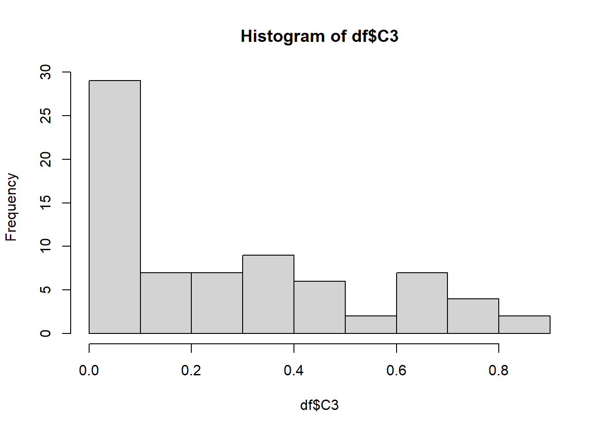
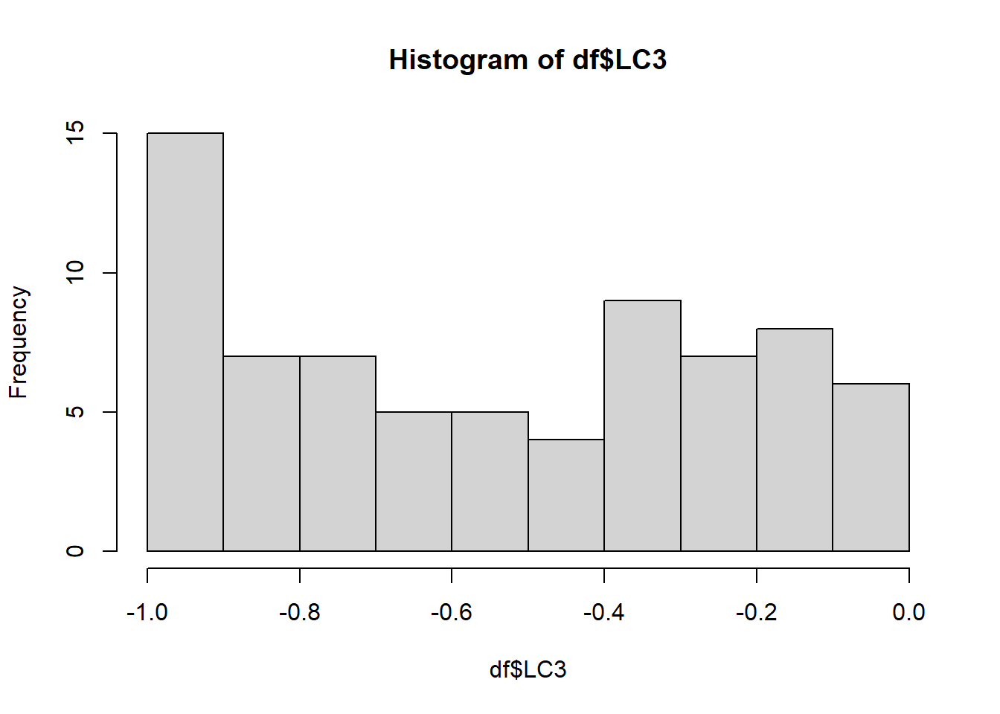
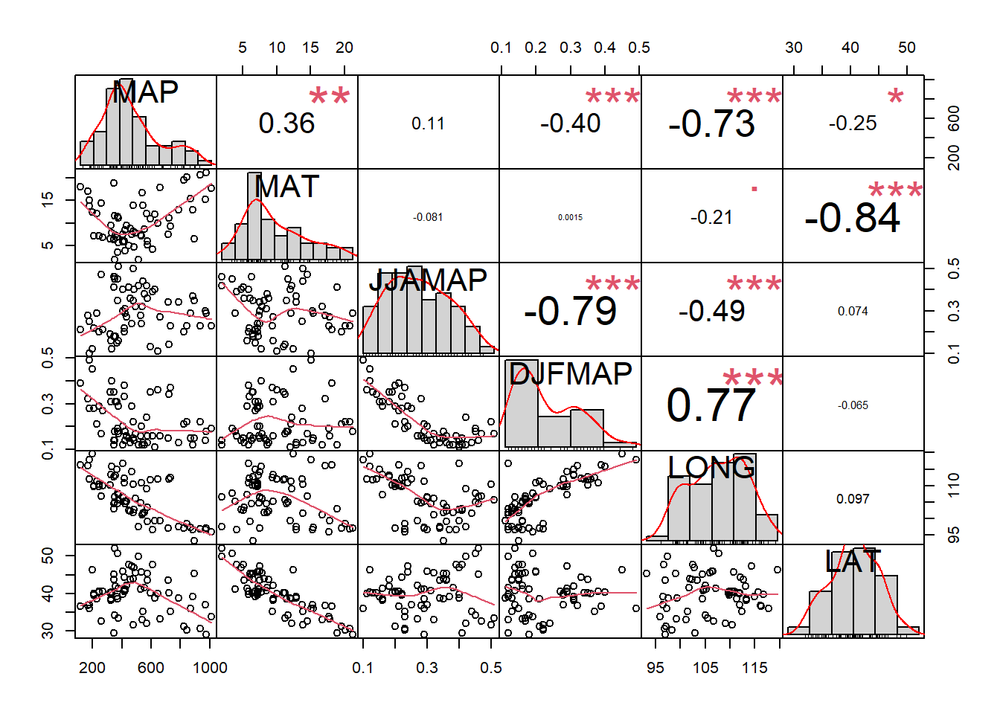
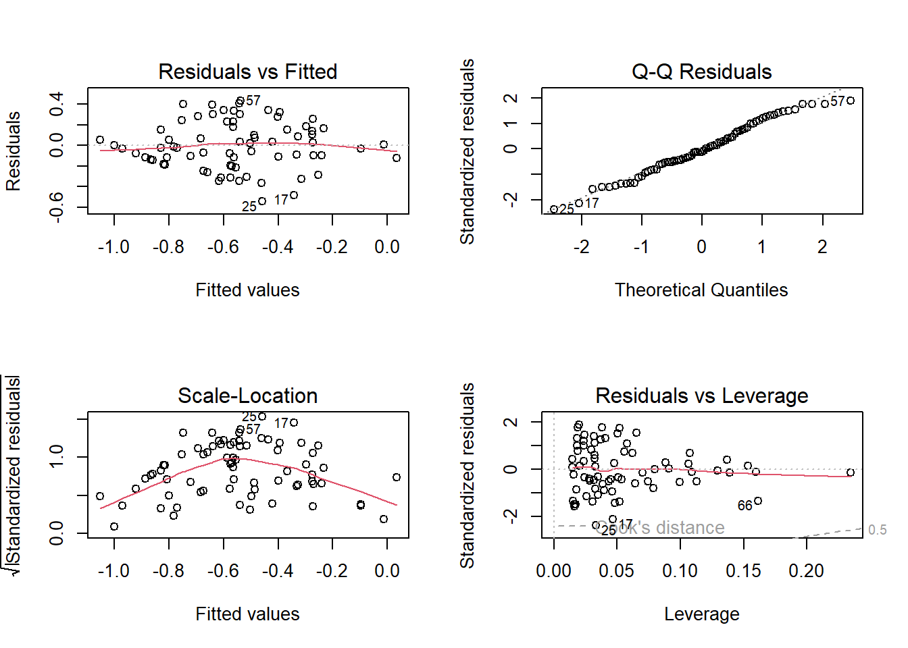
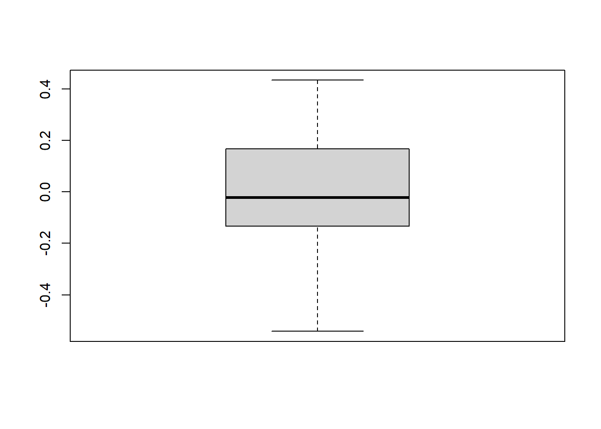

# get thedata
df <- read.csv("data/paruelo.csv")Régression multiple lineaire (6.1, 6.2)
L’équation de régression multiple peut être écrite comme suit :
\[ Y = \beta_0 + \beta_1X_1 + \beta_2X_2 + \ldots + \beta_nX_n + \epsilon \]
Où :
- \(Y\) est la variable dépendante (le résultat que vous prédisez),
- \(\beta_0\) est l’interception (la valeur de \(Y\) lorsque toutes les variables \(X\) sont égales à 0),
- \(\beta_1, \beta_2, \ldots, \beta_n\) sont les coefficients des variables indépendantes,
- \(X_1, X_2, \ldots, X_n\) sont les variables indépendantes,
- \(\epsilon\) est le terme d’erreur (la différence entre les valeurs réelles et prédites).
We’ll be using the dataset paruelo.csv (chap 6), boîte 6.1 p. 112.
Box 6.1 Worked example of multiple linear regression: relative abundance of plant functional types
Data
Paruelo & Lauenroth (1996) analyzed the geographic distribution and the effects of climate variables on the relative abundance of a number of plant functional types (PFTs) including shrubs, forbs, succulents (e.g. cacti), \(C_3\) grasses and \(C_4\) grasses. There were 73 sites across North America. The variables of interest are the relative abundance of \(C_3\) plants, the latitude in centesimal degrees (LAT), the longitude in centesimal degrees (LONG), the mean annual precipitation in mm (MAP), the mean annual temperature in \(°C\) (MAT), the proportion of MAP that fell in June, July and August (JJAMAP) and the proportion of MAP that fell in December, January and February (DJFMAP).
DT::datatable(df)Distribution of C3
hist(df$C3)
The relative abundance of \(C_3\) plants was positively skewed and transformed to \(log_{10} + 0.1\) (\(log_{10}C_3\)). A correlation matrix between the predictor variables indicated that some predictors are strongly correlated.
The transformation is seen in the column LC3.
If not, we could have transformed this way in R.
log10(df$C3 + 0.1) [1] -0.124938737 -0.124938737 -0.065501549 -0.070581074 -0.366531544
[6] -0.886056648 -1.000000000 -0.920818754 -0.823908741 -0.823908741
[11] -0.337242168 -1.000000000 -0.508638306 -0.214670165 -0.769551079
[16] -0.408935393 -0.823908741 -0.638272164 -1.000000000 -0.124938737
[21] -1.000000000 -0.004364805 -0.744727495 -0.244125144 -1.000000000
[26] -1.000000000 -0.508638306 -0.408935393 -0.346787486 -0.420216403
[31] -0.259637311 -0.387216143 -0.920818754 -0.229147988 -0.337242168
[36] -0.958607315 -1.000000000 -1.000000000 -0.136677140 -0.886056648
[41] -0.769551079 -0.657577319 -0.337242168 -0.136677140 -0.017728767
[46] -0.244125144 -0.167491087 -0.107905397 -0.091514981 -0.795880017
[51] -0.853871964 -0.619788758 -0.795880017 -0.356547324 -0.387216143
[56] -0.508638306 -0.102372909 -0.236572006 -0.920818754 -0.744727495
[61] -0.677780705 -0.677780705 -0.481486060 -0.552841969 -0.823908741
[66] -0.537602002 -0.236572006 -0.920818754 -1.000000000 -1.000000000
[71] -0.769551079 -0.387216143 -0.086186148Distribution of LC3 (Y variable)
hist(df$LC3)
Correlation matrix (plot) between the predictors
library("PerformanceAnalytics")
chart.Correlation(df[,3:8], histogram=TRUE, pch=19)
Correlation matrix between the predictors
cor(df[,c("LAT","LONG","MAP","MAT","JJAMAP","DJFMAP")]) LAT LONG MAP MAT JJAMAP DJFMAP
LAT 1.00000000 0.09655281 -0.2465058 -0.838590413 0.07417497 -0.065124848
LONG 0.09655281 1.00000000 -0.7336870 -0.213109100 -0.49155774 0.770743994
MAP -0.24650582 -0.73368703 1.0000000 0.355090766 0.11225905 -0.404512409
MAT -0.83859041 -0.21310910 0.3550908 1.000000000 -0.08077131 0.001478037
JJAMAP 0.07417497 -0.49155774 0.1122590 -0.080771307 1.00000000 -0.791540381
DJFMAP -0.06512485 0.77074399 -0.4045124 0.001478037 -0.79154038 1.000000000A correlation matrix between the predictor variables indicated that some predictors are strongly correlated.
| LAT | LONG | MAP | MAT | JJAMAP | DJFMAP | |
| LAT | 1.000 | |||||
| LONG | 0.097 | 1.000 | ||||
| MAP | -0.247 | -0.734 | 1.000 | |||
| MAT | -0.839 | -0.213 | 0.355 | 1.000 | ||
| JJAMAP | 0.074 | -0.492 | 0.112 | -0.081 | 1.000 | |
| DJFMAP | -0.065 | 0.771 | -0.405 | 0.001 | -0.792 | 1.000 |
Note the high correlations between LAT and MAT, LONG and MAP, and JJAMAP and DJFMAP, suggesting that collinearity may be a problem with this analysis.
Model 1: additive model
With six predictor variables, a linear model with all possible interactions would have 64 model terms (plus an intercept) including four-, five- and six-way interactions that are extremely difficult to interpret. As a first pass, we fitted an additive model:
\[(log_{10}C_3) = \beta_0 + \beta_1(LAT)_i + \beta_2(LONG)_i + \beta_3(MAP)_i + \beta_4(MAT)_i + \beta_5(JJAMAP)_i + \beta_6(DJFMAP)_i + \epsilon_i\]
| Coefficient | Estimate | Standard error | Standardized coefficient | Tolerance | t | P |
|---|---|---|---|---|---|---|
| Intercept | -2.689 | 1.239 | 0 | -2.170 | 0.034 | |
| LAT | 0.043 | 0.010 | 0.703 | 0.285 | 4.375 | <0.001 |
| LONG | 0.007 | 0.010 | 0.136 | 0.190 | 0.690 | 0.942 |
| MAP | <0.001 | <0.001 | 0.181 | 0.357 | 1.261 | 0.212 |
| MAT | -0.001 | 0.012 | -0.012 | 0.267 | -0.073 | 0.942 |
| JJAMAP | -0.834 | 0.475 | -0.268 | 0.316 | -1.755 | 0.084 |
| DJFMAP | -0.962 | 0.716 | -0.275 | 0.175 | -1.343 | 0.184 |
Let’s do the same thing in R!
Model 1: all the explanatory variables
model1 <- lm(LC3 ~ LAT + LONG + MAP + MAT + JJAMAP + DJFMAP, data = df)
summary(model1)
Call:
lm(formula = LC3 ~ LAT + LONG + MAP + MAT + JJAMAP + DJFMAP,
data = df)
Residuals:
Min 1Q Median 3Q Max
-0.55607 -0.17084 0.02938 0.18397 0.47953
Coefficients:
Estimate Std. Error t value Pr(>|t|)
(Intercept) -2.6886133 1.2391496 -2.170 0.0336 *
LAT 0.0434331 0.0099285 4.375 4.42e-05 ***
LONG 0.0069236 0.0100330 0.690 0.4926
MAP 0.0002743 0.0002175 1.261 0.2117
MAT -0.0008468 0.0116261 -0.073 0.9422
JJAMAP -0.8338536 0.4750796 -1.755 0.0839 .
DJFMAP -0.9618361 0.7163073 -1.343 0.1839
---
Signif. codes: 0 '***' 0.001 '**' 0.01 '*' 0.05 '.' 0.1 ' ' 1
Residual standard error: 0.2387 on 66 degrees of freedom
Multiple R-squared: 0.5136, Adjusted R-squared: 0.4694
F-statistic: 11.61 on 6 and 66 DF, p-value: 7.787e-09anova(model1)Analysis of Variance Table
Response: LC3
Df Sum Sq Mean Sq F value Pr(>F)
LAT 1 3.5703 3.5703 62.6573 3.749e-11 ***
LONG 1 0.0412 0.0412 0.7238 0.39796
MAP 1 0.1818 0.1818 3.1901 0.07868 .
MAT 1 0.0002 0.0002 0.0036 0.95224
JJAMAP 1 0.0745 0.0745 1.3066 0.25714
DJFMAP 1 0.1027 0.1027 1.8030 0.18395
Residuals 66 3.7608 0.0570
---
Signif. codes: 0 '***' 0.001 '**' 0.01 '*' 0.05 '.' 0.1 ' ' 1Final equation for the model 1 (All the variables):
\[ \operatorname{LC3} = \beta_{0} + \beta_{1}(\operatorname{LAT}) + \beta_{2}(\operatorname{LONG}) + \beta_{3}(\operatorname{MAP}) + \beta_{4}(\operatorname{MAT}) + \beta_{5}(\operatorname{JJAMAP}) + \beta_{6}(\operatorname{DJFMAP}) + \epsilon \]
\[ \operatorname{\widehat{LC3}} = -2.69 + 0.04(\operatorname{LAT}) + 0.01(\operatorname{LONG}) + 0(\operatorname{MAP}) + 0(\operatorname{MAT}) - 0.83(\operatorname{JJAMAP}) - 0.96(\operatorname{DJFMAP}) \]
Tolerance
In multiple regression analysis, Variance Inflation Factor (VIF) and Tolerance are both used to detect multicollinearity, a condition where independent variables are highly correlated. Here’s what they represent:
Variance Inflation Factor (VIF):
Definition: VIF measures how much the variance of a regression coefficient is inflated due to multicollinearity among the predictor variables. The higher the VIF, the more collinear the variable is with others.
Interpretation:
VIF = 1: No correlation between the predictor and the other variables.
VIF between 1 and 5: Moderate correlation; not usually a cause for concern.
VIF > 5 or 10: High correlation; multicollinearity might be a problem that could distort the results.
Tolerance:
Definition: Tolerance is the reciprocal of VIF and measures the proportion of variance in a predictor that is not explained by the other predictors. It indicates how much of the variability of the independent variable is unique.
Tolerance = 1/VIF
Interpretation:
Tolerance near 1: Little or no multicollinearity.
Tolerance < 0.2 or 0.1: Indicates potential multicollinearity issues.
Relationship:
- When VIF is large, Tolerance is small.
For example, if VIF is 5, Tolerance will be 0.2. If VIF is 10, Tolerance will be 0.1. Both VIF and Tolerance help in diagnosing multicollinearity, but using one is usually enough as they are inversely related.
library(car)
# Variance Inflation Factors (VIF)
vif(model1) LAT LONG MAP MAT JJAMAP DJFMAP
3.502732 5.267618 2.799428 3.742780 3.163215 5.710315 # tolerance
tolerance <- 1/vif(model1)
tolerance LAT LONG MAP MAT JJAMAP DJFMAP
0.2854914 0.1898391 0.3572159 0.2671810 0.3161340 0.1751217 It is clear that collinearity is a problem with tolerances for two of the predictors (LONG & DJFMAP) approaching 0.1.
Model 2: with interaction
Paruelo & Lauenroth (1996) separated the predictors into two groups their analyses. One group included LAT and LONG and the other included MAP, MAT, JJAMAP and DJFMAP. We will focus on the relationship between log-transformed relative abundance of \(C_3\) plants and latitude and longitude. We fitted a multiplicative model including an interaction term that measured how the relationship between \(C_3\) plants and latitude could vary with longitude and vice versa:
\((log_{10}C_3)_i = \beta_0 + \beta_1(LAT)_i + \beta_2(LONG)_i + \beta_3(LAT\times LONG)_i + \epsilon_i\)
| Coefficient | Estimate | Standard error | Tolerance | t | P-value |
|---|---|---|---|---|---|
| Intercept | 7.391 | 3625 | 2.039 | 0.045 | |
| LAT | -0.191 | 0.091 | 0.003 | -2.102 | 0.039 |
| LONG | -0.093 | 0.035 | 0.015 | -2.659 | 0.010 |
| LAT \(\times\) LONG | 0.002 | 0.001 | 0.002 | 2.572 | 0.012 |
Let’s do that in R!
model2 <- lm(LC3 ~ LAT*LONG, data = df)
summary(model2)
Call:
lm(formula = LC3 ~ LAT * LONG, data = df)
Residuals:
Min 1Q Median 3Q Max
-0.54185 -0.13298 -0.02287 0.16807 0.43410
Coefficients:
Estimate Std. Error t value Pr(>|t|)
(Intercept) 7.3909798 3.6253486 2.039 0.04531 *
LAT -0.1912401 0.0910018 -2.101 0.03925 *
LONG -0.0929020 0.0349331 -2.659 0.00972 **
LAT:LONG 0.0022522 0.0008757 2.572 0.01227 *
---
Signif. codes: 0 '***' 0.001 '**' 0.01 '*' 0.05 '.' 0.1 ' ' 1
Residual standard error: 0.2334 on 69 degrees of freedom
Multiple R-squared: 0.5137, Adjusted R-squared: 0.4926
F-statistic: 24.3 on 3 and 69 DF, p-value: 7.657e-11Final equation for the model 2 (Interaction):
\[ \operatorname{LC3} = \beta_{0} + \beta_{1}(\operatorname{LAT}) + \beta_{2}(\operatorname{LONG}) + \beta_{3}(\operatorname{LAT} \times \operatorname{LONG}) + \epsilon \]
\[ \operatorname{\widehat{LC3}} = 7.39 - 0.19(\operatorname{LAT}) - 0.09(\operatorname{LONG}) + 0(\operatorname{LAT} \times \operatorname{LONG}) \]
# tolerance
1/car::vif(model2)there are higher-order terms (interactions) in this model
consider setting type = 'predictor'; see ?vif LAT LONG LAT:LONG
0.003249445 0.014973575 0.002494144 Note the very low tolerances indicating high correlations between the predictor variables and their interactions. An indication of the effect of collinearity is that if we omit the interaction and refit the model, the partial regression slope for latitude changes sign.
Model 3: centering and interaction
We refitted the multiplicative model after centering both LAT and LONG.
| Coefficient | Estimate | Standard error | Tolerance | t | P-value |
|---|---|---|---|---|---|
| Intercept | -0.553 | 0.027 | 20.130 | <0.001 | |
| LAT | 0.048 | 0.006 | 0.829 | 8.483 | <0.001 |
| LONG | -0.003 | 0.004 | 0.980 | -0.597 | 0.552 |
| LAT \(\times\) LONG | 0.002 | 0.001 | 0.820 | 2.572 | 0.012 |
Let’s do that in R!
# center the variables LONG and LAT
# note: the function c() was used only to structure the values from column to row
# to occupy less space in the screen.
c(scale(df$LONG, scale = F)) [1] 13.14986301 7.86986301 4.37986301 -4.53013699 -3.58013699
[6] -7.02013699 0.34986301 -9.85013699 -4.87013699 -1.80013699
[11] -3.90013699 -0.85013699 -7.17013699 -7.30013699 -9.80013699
[16] -4.60013699 6.26986301 5.74986301 -3.48013699 -2.95013699
[21] 4.09986301 1.31986301 -5.22013699 -9.17013699 6.67986301
[26] 2.71986301 -4.07013699 6.84986301 5.46986301 -1.93013699
[31] 10.34986301 0.76986301 4.89986301 5.54986301 8.49986301
[36] -1.90013699 5.94986301 -1.32013699 3.97986301 3.24986301
[41] 3.34986301 5.46986301 5.34986301 0.07986301 0.07986301
[46] 0.06986301 -0.03013699 -0.40013699 -9.40013699 -9.57013699
[51] -9.40013699 -10.40013699 -9.23013699 3.42986301 3.84986301
[56] 4.42986301 4.34986301 3.59986301 6.84986301 6.84986301
[61] -8.07013699 9.34986301 -1.12013699 -1.58013699 -1.28013699
[66] -8.90013699 -9.78013699 9.67986301 11.42986301 9.84986301
[71] -8.78013699 -13.20013699 0.22986301c(scale(df$LAT, scale = F)) [1] 6.29575342 7.21575342 5.67575342 3.84575342 6.79575342
[6] -1.23424658 -7.48424658 -3.15424658 -4.80424658 0.71575342
[11] 7.64575342 -6.62424658 -6.77424658 5.22575342 -1.00424658
[16] 1.44575342 3.62575342 4.14575342 -10.52424658 3.42575342
[21] -8.50424658 10.59575342 -7.13424658 -4.05424658 1.76575342
[26] -8.10424658 3.64575342 -1.93424658 -3.00424658 4.92575342
[31] -0.28424658 1.31575342 -1.58424658 0.06575342 -0.94424658
[36] -1.55424658 -4.83424658 -5.82424658 0.36575342 0.34575342
[41] -0.22424658 -0.18424658 0.01575342 5.71575342 5.76575342
[46] 5.77575342 5.74575342 5.37575342 3.39575342 -9.52424658
[51] -11.10424658 -6.35424658 -8.77424658 -0.44424658 -0.02424658
[56] 0.39575342 0.47575342 0.39575342 -1.60424658 -1.60424658
[61] -9.85424658 0.22575342 1.01575342 1.14575342 1.96575342
[66] 9.76575342 7.64575342 -3.27424658 -4.10424658 -3.43424658
[71] -1.35424658 5.29575342 12.02575342However, these columns are already present in the dataset as CLAT and CLONG.
model3 <- lm(LC3 ~ CLAT*CLONG, data = df)
summary(model3)
Call:
lm(formula = LC3 ~ CLAT * CLONG, data = df)
Residuals:
Min 1Q Median 3Q Max
-0.54185 -0.13298 -0.02287 0.16807 0.43410
Coefficients:
Estimate Std. Error t value Pr(>|t|)
(Intercept) -0.5529416 0.0274679 -20.130 < 2e-16 ***
CLAT 0.0483954 0.0057047 8.483 2.61e-12 ***
CLONG -0.0025787 0.0043182 -0.597 0.5523
CLAT:CLONG 0.0022522 0.0008757 2.572 0.0123 *
---
Signif. codes: 0 '***' 0.001 '**' 0.01 '*' 0.05 '.' 0.1 ' ' 1
Residual standard error: 0.2334 on 69 degrees of freedom
Multiple R-squared: 0.5137, Adjusted R-squared: 0.4926
F-statistic: 24.3 on 3 and 69 DF, p-value: 7.657e-11Final equation for the model 3 (Interaction):
\[ \operatorname{LC3} = \beta_{0} + \beta_{1}(\operatorname{CLAT}) + \beta_{2}(\operatorname{CLONG}) + \beta_{3}(\operatorname{CLAT} \times \operatorname{CLONG}) + \epsilon \]
\[ \operatorname{\widehat{LC3}} = -0.55 + 0.05(\operatorname{CLAT}) + 0(\operatorname{CLONG}) + 0(\operatorname{CLAT} \times \operatorname{CLONG}) \]
# tolerance
1/car::vif(model3)there are higher-order terms (interactions) in this model
consider setting type = 'predictor'; see ?vif CLAT CLONG CLAT:CLONG
0.8268942 0.9799097 0.8195915 Now the collinearity problem has disappeared.
Diagnostic plots
par(mfrow = c(2,2))
plot(model3)
Diagnostic checks of the model did not reveal any outliers nor influential values.
Boxplot of residuals
boxplot(residuals(model3))
The boxplot of residuals was reasonably symmetrical and although there was some heterogeneity in spread of residuals when plotted against predicted values, and a \(45°\) line representing sites with zero abundance of \(C_3\) plants, this was not of a form that could be simply corrected (Figure 6.2).
Model 4: stepwise selection
Stepwise selection is a method used in regression analysis to select the most significant predictors for a model. It involves adding or removing variables iteratively based on specific criteria, such as p-values, AIC (Akaike Information Criterion), or adjusted R². There are three main types: forward selection, which starts with no variables and adds them one by one; backward elimination, which starts with all variables and removes the least significant ones; and stepwise selection, which combines both forward and backward methods, adding or removing variables at each step. The goal is to find a balance between model simplicity and explanatory power.
We’ll use the function step(), with the argument:
direction = "both"for stepwise selectiondirection = "backward"for backward selectiondirection = "forward"for forward selection
Out of interest, we also ran the full model with all six predictors through both a forward and backward selection routine for stepwise multiple regression. For both methods, the significance level for entering and removing terms based on partial F statistics was set at 0.15.
Backward selection
The backward selection is as follows.
| Coefficient | Estimate | Standard error | t | P-value |
|---|---|---|---|---|
| JJAMAP | -1.002 | 0.433 | -2.314 | 0.024 |
| DJFMAP | -1.005 | 0.485 | -2.070 | 0.042 |
| LAT | 0.042 | 0.005 | 8.033 | <0.001 |
library(MASS)
# we use an additive model with 6 explicative variables
model4 <- lm(LC3 ~ MAP + MAT + JJAMAP + DJFMAP + LONG + LAT, data = df)
# we apply the backward selection
model4 <- step(model4, direction = "backward", test = "F")Start: AIC=-202.51
LC3 ~ MAP + MAT + JJAMAP + DJFMAP + LONG + LAT
Df Sum of Sq RSS AIC F value Pr(>F)
- MAT 1 0.00030 3.7611 -204.50 0.0053 0.94215
- LONG 1 0.02714 3.7879 -203.98 0.4762 0.49256
- MAP 1 0.09065 3.8514 -202.77 1.5908 0.21165
- DJFMAP 1 0.10274 3.8635 -202.54 1.8030 0.18395
<none> 3.7608 -202.51
- JJAMAP 1 0.17554 3.9363 -201.18 3.0807 0.08387 .
- LAT 1 1.09047 4.8513 -185.92 19.1371 4.424e-05 ***
---
Signif. codes: 0 '***' 0.001 '**' 0.01 '*' 0.05 '.' 0.1 ' ' 1
Step: AIC=-204.5
LC3 ~ MAP + JJAMAP + DJFMAP + LONG + LAT
Df Sum of Sq RSS AIC F value Pr(>F)
- LONG 1 0.0282 3.7893 -205.96 0.5019 0.48111
- MAP 1 0.0904 3.8515 -204.76 1.6108 0.20877
- DJFMAP 1 0.1030 3.8641 -204.53 1.8346 0.18014
<none> 3.7611 -204.50
- JJAMAP 1 0.1756 3.9367 -203.17 3.1280 0.08151 .
- LAT 1 3.5320 7.2931 -158.16 62.9183 3.19e-11 ***
---
Signif. codes: 0 '***' 0.001 '**' 0.01 '*' 0.05 '.' 0.1 ' ' 1
Step: AIC=-205.95
LC3 ~ MAP + JJAMAP + DJFMAP + LAT
Df Sum of Sq RSS AIC F value Pr(>F)
- MAP 1 0.0643 3.8535 -206.73 1.1535 0.28661
- DJFMAP 1 0.0753 3.8646 -206.52 1.3517 0.24905
<none> 3.7893 -205.96
- JJAMAP 1 0.1682 3.9575 -204.78 3.0192 0.08681 .
- LAT 1 3.5512 7.3404 -159.69 63.7272 2.353e-11 ***
---
Signif. codes: 0 '***' 0.001 '**' 0.01 '*' 0.05 '.' 0.1 ' ' 1
Step: AIC=-206.73
LC3 ~ JJAMAP + DJFMAP + LAT
Df Sum of Sq RSS AIC F value Pr(>F)
<none> 3.8535 -206.73
- DJFMAP 1 0.2393 4.0929 -204.33 4.2856 0.04218 *
- JJAMAP 1 0.2990 4.1526 -203.27 5.3542 0.02366 *
- LAT 1 3.6041 7.4577 -160.53 64.5343 1.737e-11 ***
---
Signif. codes: 0 '***' 0.001 '**' 0.01 '*' 0.05 '.' 0.1 ' ' 1summary(model4)
Call:
lm(formula = LC3 ~ JJAMAP + DJFMAP + LAT, data = df)
Residuals:
Min 1Q Median 3Q Max
-0.55475 -0.16509 0.02634 0.18400 0.48787
Coefficients:
Estimate Std. Error t value Pr(>|t|)
(Intercept) -1.724723 0.305825 -5.640 3.46e-07 ***
JJAMAP -1.001984 0.433027 -2.314 0.0237 *
DJFMAP -1.005341 0.485632 -2.070 0.0422 *
LAT 0.042309 0.005267 8.033 1.74e-11 ***
---
Signif. codes: 0 '***' 0.001 '**' 0.01 '*' 0.05 '.' 0.1 ' ' 1
Residual standard error: 0.2363 on 69 degrees of freedom
Multiple R-squared: 0.5016, Adjusted R-squared: 0.4799
F-statistic: 23.15 on 3 and 69 DF, p-value: 1.775e-10Final equation for the model 4 (Backward):
\[ \operatorname{LC3} = \beta_{0} + \beta_{1}(\operatorname{JJAMAP}) + \beta_{2}(\operatorname{DJFMAP}) + \beta_{3}(\operatorname{LAT}) + \epsilon \]
\[ \operatorname{\widehat{LC3}} = -1.72 - 1(\operatorname{JJAMAP}) - 1.01(\operatorname{DJFMAP}) + 0.04(\operatorname{LAT}) \]
The forward selection is as follows.
| Coefficient | Estimate | Standard error | t | P-value |
|---|---|---|---|---|
| MAP | <0.001 | <0.001 | 1.840 | 0.070 |
| LAT | 0.044 | 0.005 | 66.319 | <0.001 |
library(MASS)
# we use an additive model with 6 explicative variables
model4 <- lm(LC3 ~ MAP + MAT + JJAMAP + DJFMAP + LONG + LAT, data = df)
# we apply the forward selection
model4 <- step(model4, direction = "forward", test = "F")Start: AIC=-202.51
LC3 ~ MAP + MAT + JJAMAP + DJFMAP + LONG + LATsummary(model4)
Call:
lm(formula = LC3 ~ MAP + MAT + JJAMAP + DJFMAP + LONG + LAT,
data = df)
Residuals:
Min 1Q Median 3Q Max
-0.55607 -0.17084 0.02938 0.18397 0.47953
Coefficients:
Estimate Std. Error t value Pr(>|t|)
(Intercept) -2.6886133 1.2391496 -2.170 0.0336 *
MAP 0.0002743 0.0002175 1.261 0.2117
MAT -0.0008468 0.0116261 -0.073 0.9422
JJAMAP -0.8338536 0.4750796 -1.755 0.0839 .
DJFMAP -0.9618361 0.7163073 -1.343 0.1839
LONG 0.0069236 0.0100330 0.690 0.4926
LAT 0.0434331 0.0099285 4.375 4.42e-05 ***
---
Signif. codes: 0 '***' 0.001 '**' 0.01 '*' 0.05 '.' 0.1 ' ' 1
Residual standard error: 0.2387 on 66 degrees of freedom
Multiple R-squared: 0.5136, Adjusted R-squared: 0.4694
F-statistic: 11.61 on 6 and 66 DF, p-value: 7.787e-09Final equation for the model 4 (Forward):
\[ \operatorname{LC3} = \beta_{0} + \beta_{1}(\operatorname{MAP}) + \beta_{2}(\operatorname{MAT}) + \beta_{3}(\operatorname{JJAMAP}) + \beta_{4}(\operatorname{DJFMAP}) + \beta_{5}(\operatorname{LONG}) + \beta_{6}(\operatorname{LAT}) + \epsilon \]
\[ \operatorname{\widehat{LC3}} = -2.69 + 0(\operatorname{MAP}) + 0(\operatorname{MAT}) - 0.83(\operatorname{JJAMAP}) - 0.96(\operatorname{DJFMAP}) + 0.01(\operatorname{LONG}) + 0.04(\operatorname{LAT}) \]
Note
The results in R differ from those in the book because it used different metrics to select the best model. The book uses an F-test set at 0.15.
Metrics AIC and BIC for variable selection
Akaike Information Criterion (AIC) and Bayesian Information Criterion (BIC) are statistical measures used for model selection, particularly in the context of regression and other predictive models. Both criteria penalize model complexity to prevent overfitting, but they do so differently: AIC is based on the concept of information loss, favoring models that minimize the information loss between the true model and the approximating model, while BIC incorporates a stronger penalty for the number of parameters as the sample size increases, making it more conservative in terms of model complexity. Specifically, AIC is calculated as
AIC = \(-2log(L) + 2k\) (where (\(L\)) is the likelihood of the model and (\(k\)) is the number of parameters), whereas BIC is computed as
BIC = \(-2log(L) + k \space log(n)\) (where (\(n\)) is the sample size).
In practice, lower values of AIC or BIC indicate a better-fitting model, with AIC often used for predictive performance and BIC more frequently used for model selection when the goal is to identify the true model structure.
Model 5: AIC for selecting the best model
model5 <- lm(LC3 ~ MAP + MAT + JJAMAP + DJFMAP + LONG + LAT, data = df)
# we select k = 2 to represent AIC
model5_AIC <- step(model5, direction = "backward", k = 2)Start: AIC=-202.51
LC3 ~ MAP + MAT + JJAMAP + DJFMAP + LONG + LAT
Df Sum of Sq RSS AIC
- MAT 1 0.00030 3.7611 -204.50
- LONG 1 0.02714 3.7879 -203.98
- MAP 1 0.09065 3.8514 -202.77
- DJFMAP 1 0.10274 3.8635 -202.54
<none> 3.7608 -202.51
- JJAMAP 1 0.17554 3.9363 -201.18
- LAT 1 1.09047 4.8513 -185.92
Step: AIC=-204.5
LC3 ~ MAP + JJAMAP + DJFMAP + LONG + LAT
Df Sum of Sq RSS AIC
- LONG 1 0.0282 3.7893 -205.96
- MAP 1 0.0904 3.8515 -204.76
- DJFMAP 1 0.1030 3.8641 -204.53
<none> 3.7611 -204.50
- JJAMAP 1 0.1756 3.9367 -203.17
- LAT 1 3.5320 7.2931 -158.16
Step: AIC=-205.95
LC3 ~ MAP + JJAMAP + DJFMAP + LAT
Df Sum of Sq RSS AIC
- MAP 1 0.0643 3.8535 -206.73
- DJFMAP 1 0.0753 3.8646 -206.52
<none> 3.7893 -205.96
- JJAMAP 1 0.1682 3.9575 -204.78
- LAT 1 3.5512 7.3404 -159.69
Step: AIC=-206.73
LC3 ~ JJAMAP + DJFMAP + LAT
Df Sum of Sq RSS AIC
<none> 3.8535 -206.73
- DJFMAP 1 0.2393 4.0929 -204.33
- JJAMAP 1 0.2990 4.1526 -203.27
- LAT 1 3.6041 7.4577 -160.53# final model with the best AIC
summary(model5_AIC)
Call:
lm(formula = LC3 ~ JJAMAP + DJFMAP + LAT, data = df)
Residuals:
Min 1Q Median 3Q Max
-0.55475 -0.16509 0.02634 0.18400 0.48787
Coefficients:
Estimate Std. Error t value Pr(>|t|)
(Intercept) -1.724723 0.305825 -5.640 3.46e-07 ***
JJAMAP -1.001984 0.433027 -2.314 0.0237 *
DJFMAP -1.005341 0.485632 -2.070 0.0422 *
LAT 0.042309 0.005267 8.033 1.74e-11 ***
---
Signif. codes: 0 '***' 0.001 '**' 0.01 '*' 0.05 '.' 0.1 ' ' 1
Residual standard error: 0.2363 on 69 degrees of freedom
Multiple R-squared: 0.5016, Adjusted R-squared: 0.4799
F-statistic: 23.15 on 3 and 69 DF, p-value: 1.775e-10Final equation for the model 5 (AIC - backward):
\[ \operatorname{LC3} = \beta_{0} + \beta_{1}(\operatorname{JJAMAP}) + \beta_{2}(\operatorname{DJFMAP}) + \beta_{3}(\operatorname{LAT}) + \epsilon \]
\[ \operatorname{\widehat{LC3}} = -1.72 - 1(\operatorname{JJAMAP}) - 1.01(\operatorname{DJFMAP}) + 0.04(\operatorname{LAT}) \]
Applying BIC for selecting the best model
model5 <- lm(LC3 ~ MAP + MAT + JJAMAP + DJFMAP + LONG + LAT, data = df)
# we apply k = log of the number of observations to represent BIC
# n is the number of observations in your dataset
n <- nrow(df)
model5_BIC <- step(model5, direction = "backward", k = log(n))Start: AIC=-186.47
LC3 ~ MAP + MAT + JJAMAP + DJFMAP + LONG + LAT
Df Sum of Sq RSS AIC
- MAT 1 0.00030 3.7611 -190.76
- LONG 1 0.02714 3.7879 -190.24
- MAP 1 0.09065 3.8514 -189.02
- DJFMAP 1 0.10274 3.8635 -188.79
- JJAMAP 1 0.17554 3.9363 -187.43
<none> 3.7608 -186.47
- LAT 1 1.09047 4.8513 -172.18
Step: AIC=-190.76
LC3 ~ MAP + JJAMAP + DJFMAP + LONG + LAT
Df Sum of Sq RSS AIC
- LONG 1 0.0282 3.7893 -194.50
- MAP 1 0.0904 3.8515 -193.31
- DJFMAP 1 0.1030 3.8641 -193.08
- JJAMAP 1 0.1756 3.9367 -191.72
<none> 3.7611 -190.76
- LAT 1 3.5320 7.2931 -146.71
Step: AIC=-194.5
LC3 ~ MAP + JJAMAP + DJFMAP + LAT
Df Sum of Sq RSS AIC
- MAP 1 0.0643 3.8535 -197.56
- DJFMAP 1 0.0753 3.8646 -197.36
- JJAMAP 1 0.1682 3.9575 -195.62
<none> 3.7893 -194.50
- LAT 1 3.5512 7.3404 -150.52
Step: AIC=-197.57
LC3 ~ JJAMAP + DJFMAP + LAT
Df Sum of Sq RSS AIC
<none> 3.8535 -197.56
- DJFMAP 1 0.2393 4.0929 -197.46
- JJAMAP 1 0.2990 4.1526 -196.40
- LAT 1 3.6041 7.4577 -153.66# final model with the best BIC
summary(model5_BIC)
Call:
lm(formula = LC3 ~ JJAMAP + DJFMAP + LAT, data = df)
Residuals:
Min 1Q Median 3Q Max
-0.55475 -0.16509 0.02634 0.18400 0.48787
Coefficients:
Estimate Std. Error t value Pr(>|t|)
(Intercept) -1.724723 0.305825 -5.640 3.46e-07 ***
JJAMAP -1.001984 0.433027 -2.314 0.0237 *
DJFMAP -1.005341 0.485632 -2.070 0.0422 *
LAT 0.042309 0.005267 8.033 1.74e-11 ***
---
Signif. codes: 0 '***' 0.001 '**' 0.01 '*' 0.05 '.' 0.1 ' ' 1
Residual standard error: 0.2363 on 69 degrees of freedom
Multiple R-squared: 0.5016, Adjusted R-squared: 0.4799
F-statistic: 23.15 on 3 and 69 DF, p-value: 1.775e-10Final equation for the model 5 (BIC):
\[ \operatorname{LC3} = \beta_{0} + \beta_{1}(\operatorname{JJAMAP}) + \beta_{2}(\operatorname{DJFMAP}) + \beta_{3}(\operatorname{LAT}) + \epsilon \]
\[ \operatorname{\widehat{LC3}} = -1.72 - 1(\operatorname{JJAMAP}) - 1.01(\operatorname{DJFMAP}) + 0.04(\operatorname{LAT}) \]
When to use AIC or BIC
Use AIC for better predictive accuracy, especially when working with smaller datasets or when the true model is likely complex.
Use BIC for simpler, more parsimonious models, especially when you have a large dataset and want to avoid overfitting.
Importance of RMSE
The Root Mean Squared Error (RMSE) is a key metric for evaluating the performance of predictive models, especially in regression analysis. It provides a measure of how well a model’s predictions match the actual observed data. Here are some reasons why RMSE is important in evaluating models:
1. Measures Prediction Accuracy:
RMSE gives a direct indication of how close the predicted values are to the actual values in the dataset. Lower RMSE values indicate better fit, as they suggest that the predictions are closer to the real observations.
2. Interpretability:
RMSE is expressed in the same units as the dependent variable (response variable), making it easy to interpret in the context of the problem. For example, if you’re predicting house prices in dollars, RMSE will tell you the average prediction error in dollars, which makes it more intuitive.
3. Sensitive to Large Errors:
RMSE gives more weight to large errors due to the squaring of the residuals before averaging. This makes RMSE a good choice when you want to penalize models that make large prediction errors and want to emphasize minimizing significant deviations.
4. Comparison of Models:
RMSE is often used to compare different models’ performances. The model with the lowest RMSE is usually considered the better model when comparing across models with similar complexity and scale. It helps in choosing between competing models during model selection.
5. Standard Model Performance Metric:
RMSE is one of the most commonly used metrics in machine learning and statistical modeling. It provides a standard way to evaluate models across different domains and applications.
Limitations of RMSE:
Sensitive to Scale: If your dependent variable has a wide range, RMSE values can be misleading. In such cases, normalized error metrics like MAE (Mean Absolute Error) might complement RMSE.
Doesn’t Work Well with Outliers: Since RMSE squares the errors, it can be disproportionately affected by outliers, making it essential to consider this when choosing it as a performance measure.
In summary, RMSE is important because it gives a clear, interpretable, and meaningful measure of prediction accuracy and helps guide model comparison and selection based on how well a model can predict unseen data.
sqrt(mean(model5_BIC$residuals^2))[1] 0.229757